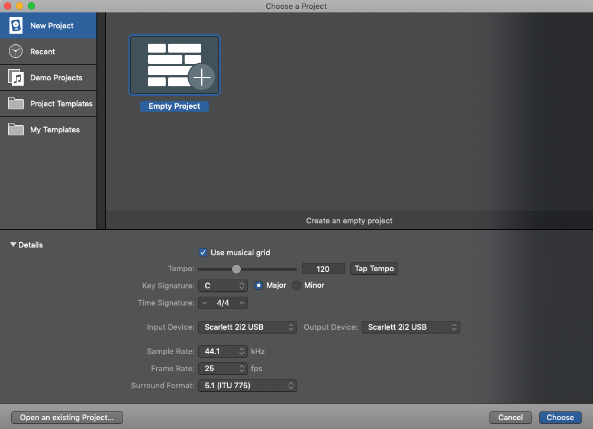
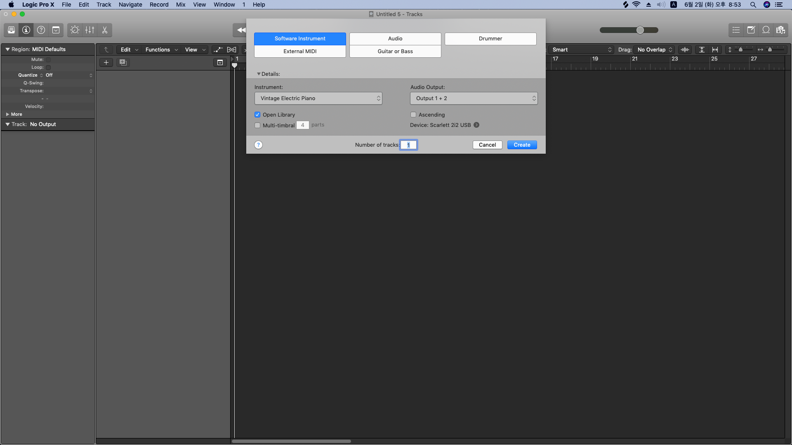
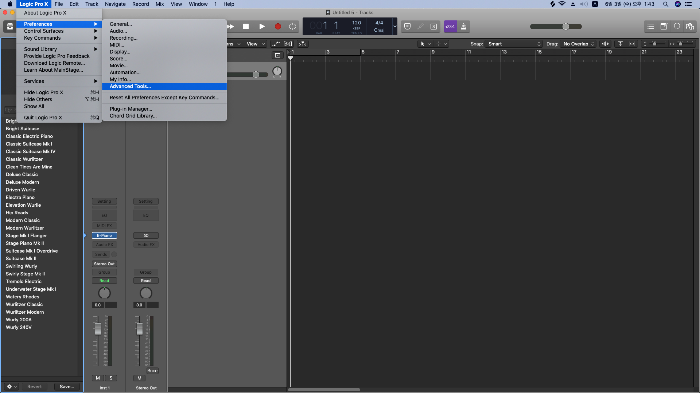
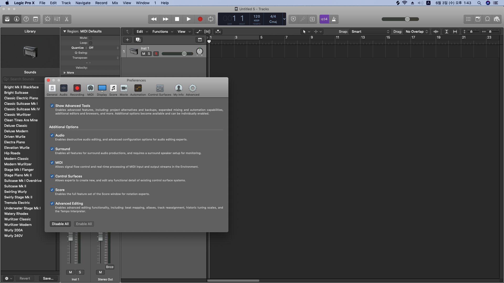
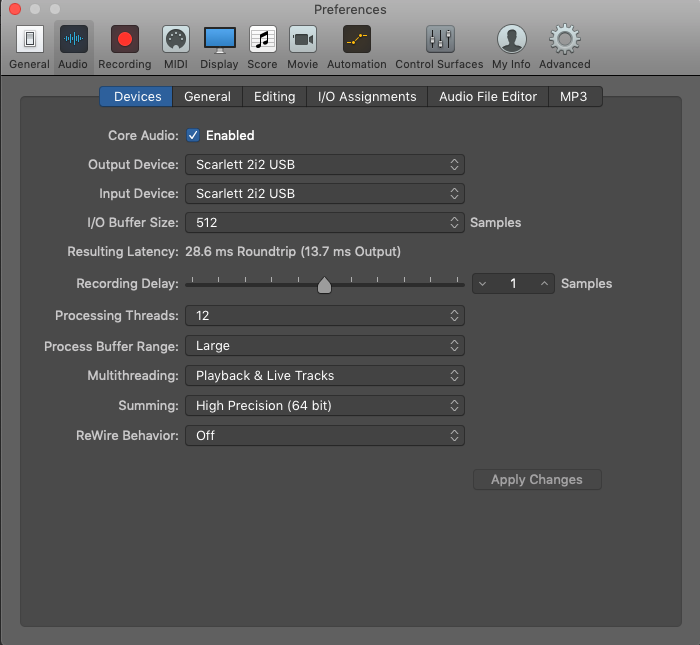
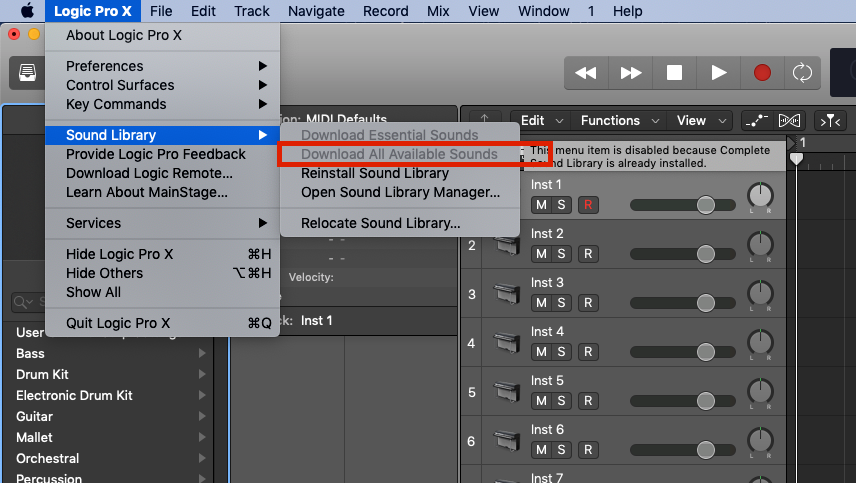
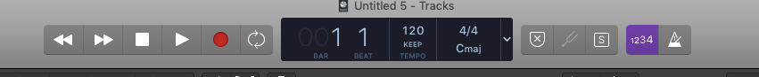
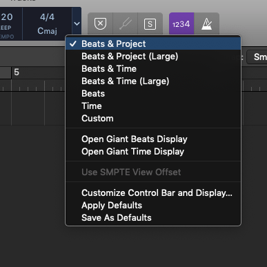
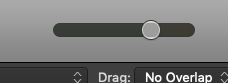

1. Basic Set
1) Double Click Empty Project

1) Click Create button

1) Click Logic Pro X
2) Click Preferences
3) Click Advenced Tools

1) Check All blanks
2) Check Enable All
3) Now you can use all Logic Function

1) Click Audio tap
2) Set input and output divice
3) Set I/O Buffer Size high when you are mixing songs(256~512)
4) Set I/O Buffer Size low when you record voice(64~128)
5) Set Processing Threads value high, then you're mac will use all your mac ability
6) Set Processing Threads value low, then it will not use every ability of your mac
7) Then turn off the window

1) You should download all Sounds!
2) It will take a few minute.

1) You can play the project('space' key)
2) You can stop the project('space' key)
3) You can record the project('R' key)
4) You can loop the region('C' key)
5) You can set bpm and beat of the project
6) 'K' key = metronome!
7) 'S' key = solo the track(one or multiple tracks)
8) '1234' means that it count 4 beat before you record.

1) You can change this part(Beat&project, beats, time...)
2) You can customize this part

1) You can control volume of the entire preject through this button

It's been a basic setup!